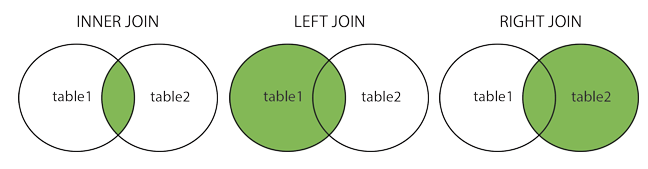
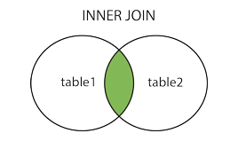
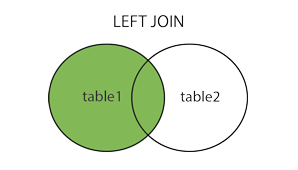
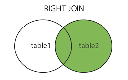

SHOW 명령문은 DB의 목록이나 테이블의 목록을 확인할 때 사용하는 명령문이다.
SHOW DATABASES;
SHOW TABLES;
USE 명령문은 DB를 선택할 때 사용하는 명령문이다.
USE <DB_name>;
CREATE 명령문은 새로운 DB 또는 테이블을 생성할 때 사용하는 명령문이다.
CREATE DATABASE <DB_name>;
CREATE TABLE <table_name> (
id int PRIMARY KEY AUTO_INCREMENT,
name varchar(255),
email varchar(255)
);
DROP 명령문은 DB 또는 테이블을 삭제할 수 있는 명령문이다.
DROP DATABASE <DB_name>;
DROP TABLE <table_name>;
ALTER 명령문은 기존 테이블의 컬럼을 추가, 삭제 또는 수정하는 명령문이다.
ALTER 명령문과 ADD문을 사용하면 테이블에 컬럼을 추가할 수 있다.
ALTER TABLE <table_name> ADD <column_name> <datatype>;
ALTER 명령문과 DROP문을 사용하면 테이블에서 컬럼을 삭제할 수 있다.
ALTER TABLE <table_name> DROP <column_name>;
ALTER 명령문과 MODIFY문을 사용하면 테이블에서 컬럼의 데이터 유형을 변경할 수 있다.
ALTER TABLE <table_name> MODIFY COLUMN <column_name> <datatype>;
DESCRIBE 명령문은 테이블의 구조를 확인할 수 있다.
DESCRIBE <table_name>;
DESC <table_name>;
SELECT 명령문은 데이터를 선택할 수 있다.
SELECT <column_name> FROM <table_name>;
WHERE 절은 지정된 조건을 충족하는 레코드를 추출하는 데 사용된다.
SELECT <column_name> FROM <table_name> WHERE <condition>;
AND, OR, NOT 연산자는 WHERE 절과 결합할 수 있다.
AND, OR 연산자는 둘 이상의 조건을 기반으로 레코드를 필터링하는 데 사용된다.
SELECT <column_name> FROM <table_name> WHERE <condition> AND <condition>;
SELECT <column_name> FROM <table_name> WHERE <condition> OR <condition>;
NOT 연산자는 조건이 true가 아닌 경우의 레코드를 표시한다.
SELECT <column_name> FROM <table_name> WHERE NOT <condition>;
ORDER BY 문은 레코드를 오름차순 또는 내림차순으로 정렬하는 데 사용된다.
ORDER BY 문은 기본적으로 레코드를 오름차순으로 정렬하며 내림차순으로 정렬하려면 DESC 키워드를 사용한다.
SELECT <column_name> FROM <table_name> ORDER BY <column_name> ASC(생략가능);
SELECT <column_name> FROM <table_name> ORDER BY <column_name> DESC;
INSERT INTO 문은 테이블에 새 레코드를 삽입하는 데 사용된다.
INSERT INTO <table_name> (<column_name>) VALUES (<value>);
UPDATE 문은 테이블의 기존 레코드를 수정하는 데 사용된다.
UPDATE <table_name> SET <column_name>=<value> WHERE <condition>;
DELETE 문은 테이블의 기존 레코드를 삭제하는 데 사용된다.
DELETE FROM <table_name> WHERE <condition>;
MIN() 함수는 선택한 컬럼의 가장 작은 값을 반환한다.
SELECT MIN(<column_name>) FROM <table_name> WHERE <condition>;
MAX() 함수는 선택한 컬럼의 가장 큰 값을 반환한다.
SELECT MAX(<column_name>) FROM <table_name> WHERE <condition>;
COUNT() 함수는 지정된 기준과 일치하는 레코드의 수를 반환한다.
SELECT COUNT(<column_name>) FROM <table_name> WHERE <condition>;
AVG() 함수는 숫자 컬럼의 평균 값을 반환한다.
SELECT AVG(<column_name>) FROM <table_name> WHERE <condition>;
SUM() 함수는 숫자 컬럼의 총 합계를 반환한다.
SELECT SUM(<column_name>) FROM <table_name> WHERE <condition>;
Aliases 문은 테이블 또는 테이블의 컬럼에 임시 이름을 지정할 때 사용된다.
SELECT <column_name> AS <new_column_name> FROM <table_name>;
SELECT <column_name> FROM <table_name> AS <new_table_name>;
GROUP BY 문은 특정 컬럼을 기준으로 그룹화한다.
SELECT <column_name> FROM <table_name> WHERE <condition> GROUP BY <column_name>;
JOIN 문은 둘 이상의 테이블 사이의 관련 컬럼을 기반으로 레코드를 결합하는 데 사용된다.

INNER JOIN 문은 두 테이블에서 일치하는 값이 있는 레코드를 선택한다.
INNER JOIN 문에서 INNER를 생략하고 JOIN만 사용할 수도 있다.

SELECT <column_name> FROM <table1> INNER JOIN <table2> ON
<table1>.<column_name> = <table2>.<column_name>;
SELECT <column_name> FROM <table1> JOIN <table2> ON
<table1>.<column_name> = <table2>.<column_name>;
LEFT JOIN 문은 왼쪽 테이블에서 모든 레코드를 오른쪽 테이블에서 일치하는 레코드를 선택한다.

SELECT <column_name> FROM <table1> LEFT JOIN <table2> ON
<table1>.<column_name> = <table2>.<column_name>;
RIGHT JOIN 문은 오른쪽 테이블에서 모든 레코드를 왼쪽 테이블에서 일치하는 레코드를 선택한다.

SELECT <column_name> FROM <table1> RIGHT JOIN <table2> ON
<table1>.<column_name> = <table2>.<column_name>;